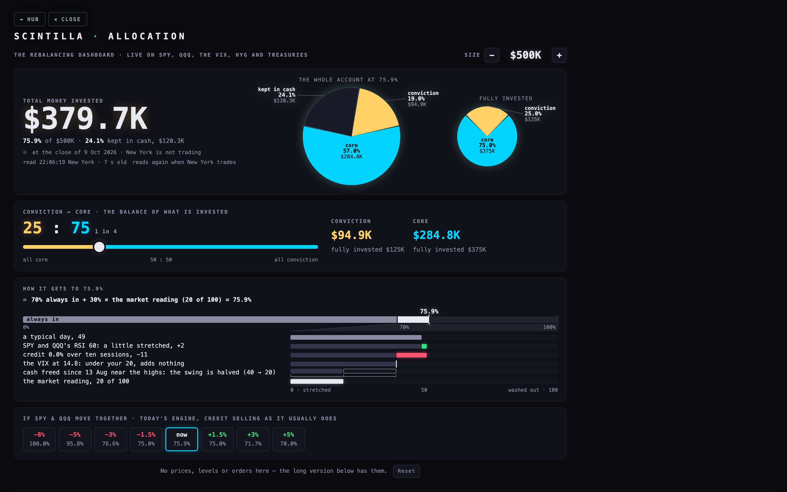
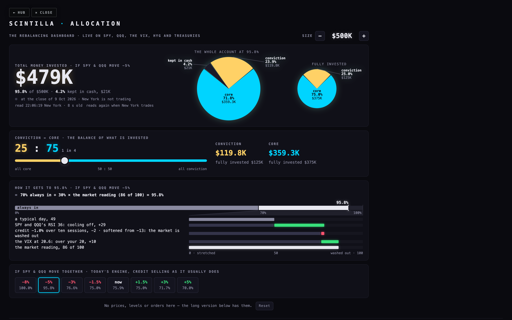
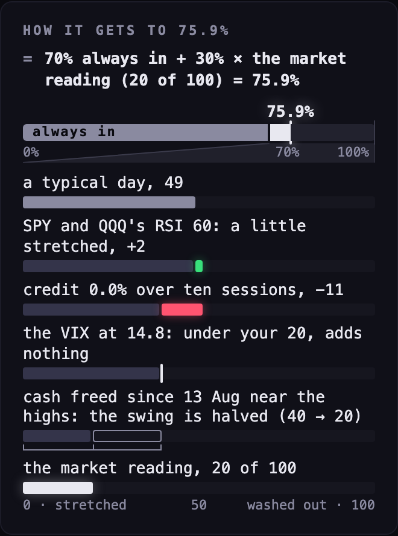
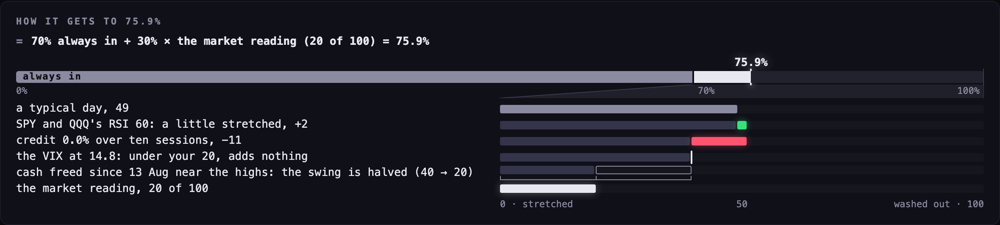
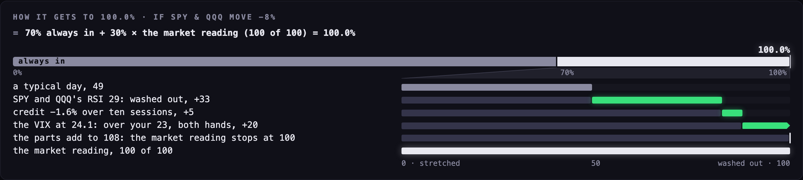
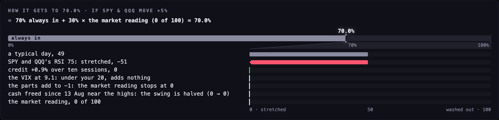

ON THE FIRST SCREEN — BEFORE AND AFTER, AND ON A PHONE




9 OCT 2026 · THE FIRST SCREEN'S "HOW IT GETS TO 75.9%" IS ONE PICTURE INSTEAD OF FOUR LINES · BRANCH db2-visual-summary-20261009 · NOT YET LIVE — THE COORDINATOR MERGES AND DEPLOYS

You said: "This dashboard tool — how it gets to 75.9 — I don't know, man. Can we do something a little bit more visual on this kind of thing?" The one formula line stays on top. Under it, read the picture top to bottom:





Where it lives. study/db2/how.mjs draws the picture (howSteps: the sum; howHtml: the drawing; HOW_CSS: its look). study/db1/dashboard.mjs calls it in the fourth card and makes the lines (summaryLines) — now also for a what-if move. study/ds1/live.mjs hands each what-if move its own reading whole (r) and the day its raise-cash state began (since); nothing new is fetched. No library; the colours are the dashboard's own (the tool's green and red for up and down, its text white, its dim grey).
The sum. A typical day (the model's own, 49.08) + the RSI part + the credit part as counted (after version 2's softening and version 3's treasury rule) + the VIX's add by your 20 / 23 rule + any part you switched on = the level before cash; kept inside 0–100; halved while cash is raised = the market reading. The number = 70 + 30 × the market reading ÷ 100, on the dials under ASSUMPTIONS. The picture does this sum itself and compares it with the engine's reading; the difference is 0 to six decimals on every case tested.
Why the VIX was said twice. Version 3 passes the VIX's add to version 2 through the same slot as the parts the viewer switches on. DB1's line read that slot whole. Now only what is left after the VIX's own add is called "the parts you switched on".
Why every class starts with hw-. The first drawing gave one bar the plain class "under"; the dashboard's sheet has a rule of that name (the line under the big number) and the bar came out 2 px tall. It was caught by looking at the picture. A test now holds that no class in the picture is a plain name.
Pictures. scripts/db2-shots.mjs, headless, one page at a time, every request that is not a read blocked (none was attempted), drawn at twice the pixels so the thin marks can be examined: 18 pictures in study/db2/pictures, with what was on the screen for each in study/db2/data/db2-shots.json.